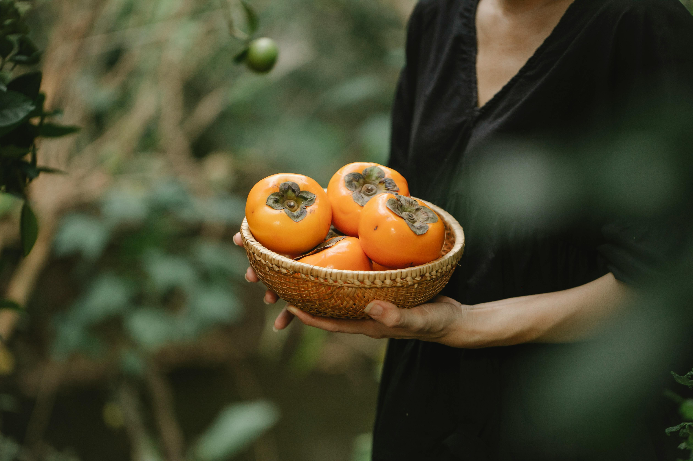

Persimmons
Enjoy some juicy, freshly pluck persimmons straight from your garden.

Description
Persimmons are my favourite fruits. October is generally considered the pumpkin season. But to me, they're persimmon season. I wait all year until october to finally buy this heavenly fruit. It is mouth-watering and wallet-emptying. But how do we devour it while being financially responsible? Hint: (My recipe)
Ingredients
- Persimmon seeds
- Soil
- Water (a lot)
- A dog (or) spade
Directions
- Go to your garden.
- Get your dog/spade to dig a hole in your desired area.
- Carefully place your seed in the hole.
- Use the soil you dug out to close up the hole.
- Pat it gently. (not too tight)
- Pat your dog and say, "Good boy/girl". (mandatory if you used your dog)
- Pour some water on top of it.
- Water it everyday in the morning.
- Wait for several years until it grows big and starts fruiting.
Home